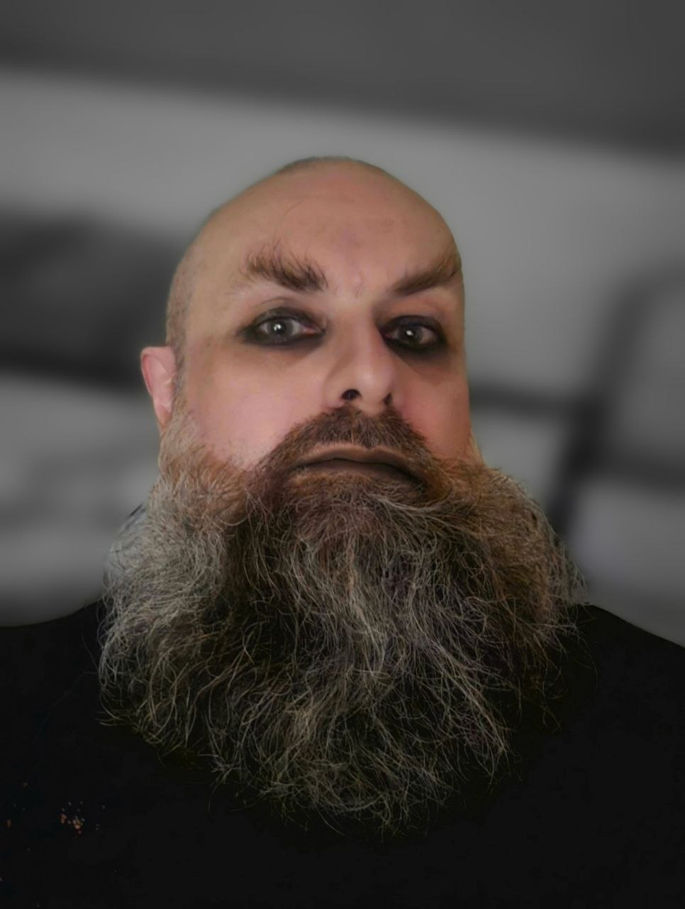
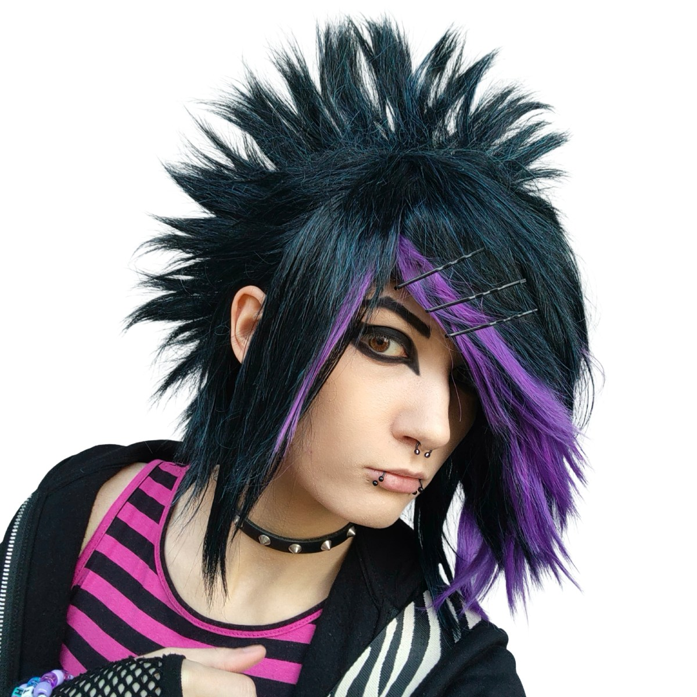
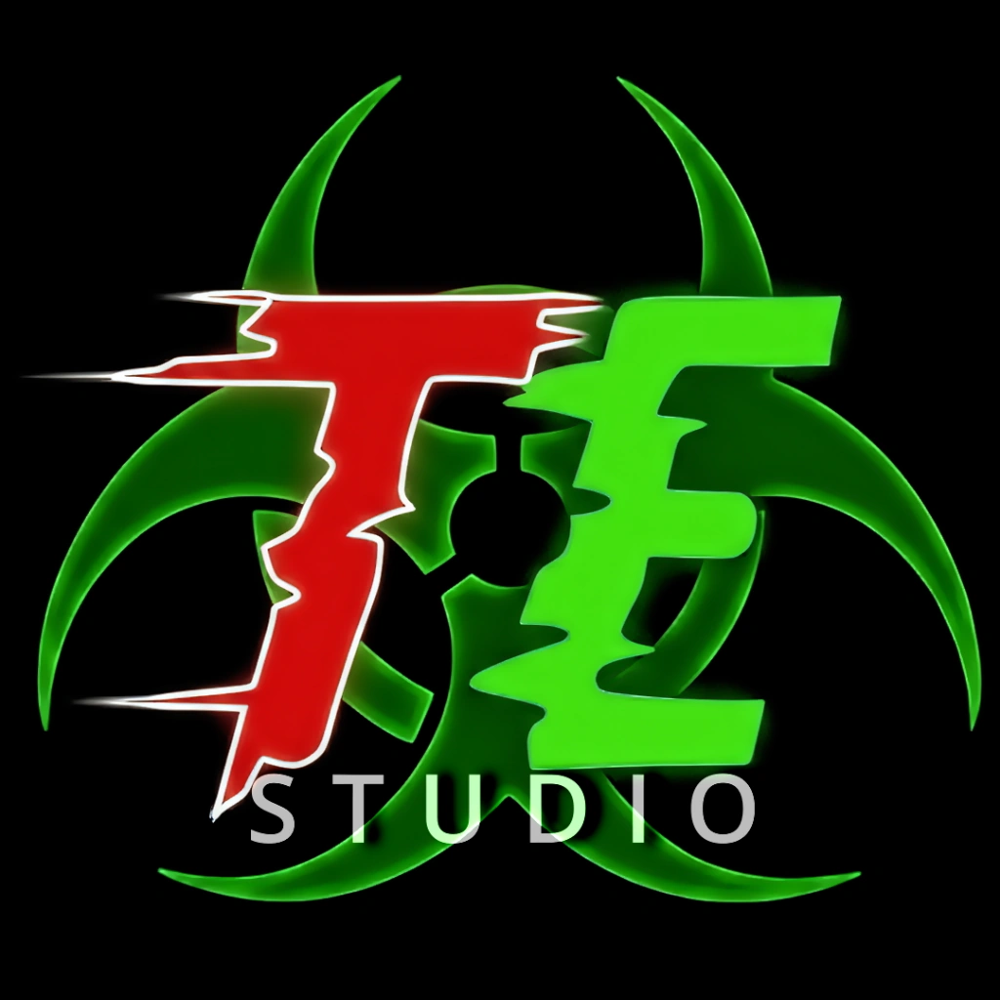

Działalność Wydawnicza
Toxic Echo studio jest wydawcą multimodalnego nieregularnika społeczno-artystycznego The Reverse Emo Changeling.
Stopka Redakcyjna (Masthead)
The Reverse Emo Changeling - Nieregularnik społeczno-artystyczny
Wydawca / Publisher:
Bartosz Gala - Toxic Echo studio
Siedziba i adres redakcji:
ul. Hetmana Stanisława Żółkiewskiego 9/4
31-539 Kraków, Polska
Kontakt z wydawcą:
publisher@toxic-echo.studio
Redaktor naczelny / Editor-in-Chief:
Mighn Taghor (eic@emo-changeling.xyz)
Dziennikarz prowadzący / Host:
Nico Łach (nico.lach@emo-changeling.xyz)
Publicystyka subkulturowa:
Mighn Taghor
Rejestracja prasowa:
Sąd Okręgowy w Krakowie, Wydział I Cywilny
Rejestr dzienników i czasopism: I Ns Rej PR 3553
Sprawy prawne i zapytania:
legal@emo-changeling.xyz
Zasady publikacji i regulamin:
Pełny regulamin / Legal
Kluczowy Zespół Redakcyjny

Mighn Taghor
Zajmuje się felietonami subkulturowymi i publicystycznymi, analizą sceny niezależnej oraz dbaniem o to, by słowo pisane miało odpowiedni ciężar i nie podlegało korporacyjnej dewaluacji.
Kontakt: eic@emo-changeling.xyz | LinkedIn | GitHub

Nico Łach
Frontman i lider projektu, gospodarz wywiadów i koordynator graficzny. Łączy światy cyfrowego artu (Digiart, pigeonification project) z publicystyką i muzyczną subkulturą emo/scene. Znany pod pseudonimami artystycznymi "Zebroid" oraz "Vikasiek".
Kontakt: nico.lach@emo-changeling.xyz | LinkedIn | GitHub

Bartosz Gala
Wydawca e-zina i koordynator techniczny. Odpowiada za finansowanie, infrastrukturę techniczną, bezpieczeństwo oraz wsparcie prawne całego projektu.
Kontakt: publisher@toxic-echo.studio | LinkedIn | GitHub